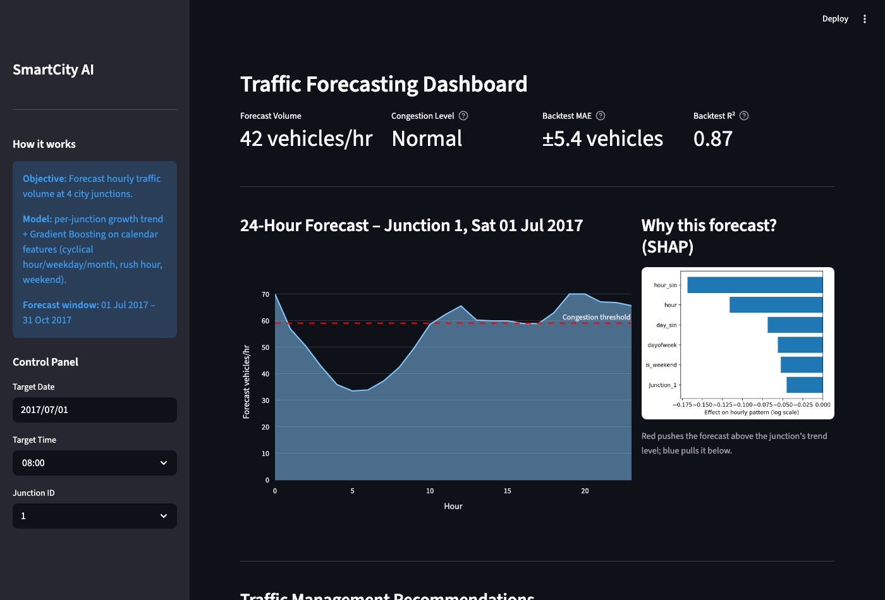

Smart City Traffic Forecasting
Forecasts hourly traffic at 4 city junctions up to 4 months ahead from 48,120 sensor records, with a Streamlit dashboard for congestion alerts.
- Per-junction growth trend combined with Gradient Boosting on cyclical calendar features
- Found and fixed target leakage; validated with 3 rolling-origin backtests
- R² 0.87, 16% lower error than Linear Regression and 10% lower than a seasonal-naive baseline